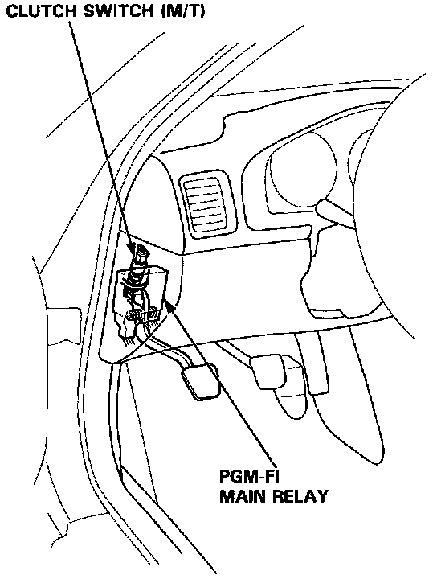

Operation CHARM
: Car repair manuals for everyone.
Home
>>
Acura
>>
1995
>>
Legend Coupe V6-3206cc 3.2L SOHC FI
>>
Repair and Diagnosis
>>
Powertrain Management
>>
Computers and Control Systems
>>
Clutch Switch
>>
Locations
Clutch Switch: Locations
Main Relay & Clutch Switch Locations:

The Clutch Switch is located near the pivot of the clutch pedal assembly.